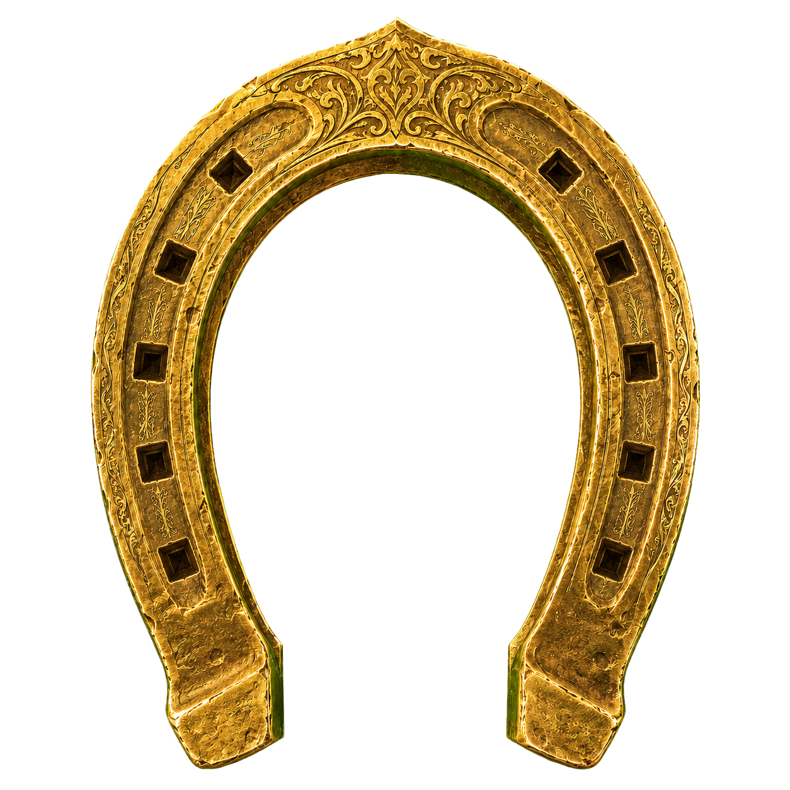

Starter wählen
Mit !starter 1, 2 oder 3 beginnt deine Reise auf Level 5.

STALLIFIBELTHESTALLIONAIRE92Stallimon leben im Stream von TheStallionaire92. Wähle deinen Starter, werde zufällig zu Wildbegegnungen gerufen und stelle ein Team zusammen, das wirklich dir gehört.
Mit !starter 1, 2 oder 3 beginnt deine Reise auf Level 5.
Wirst du ausgewählt, hast du 30 Sekunden für !annehmen.
Schwäche das wilde Stallimon und nutze ein Hufeisensiegel mit !binden.
Drei Stallimon kämpfen aktiv, zehn reisen im Hufeisen, weitere ruhen auf der Seelenweide.
Groß- und Kleinschreibung spielen keine Rolle.
Du kannst jede der 50 Arten einmal an dich binden. Zehn Seelensteine sitzen sichtbar in den Kerbungen deines Reisehufeisens. Davon bestimmst du drei als aktives Kampfteam. Bis zu 40 weitere Stallimon ruhen sicher auf deiner Seelenweide.
Alle bekannten Formen, Fähigkeiten, Werte, Attacken und Entwicklungsbedingungen.
Verbinde dich mit Twitch und sieh, welchen Stallimon du begegnet bist, welche du gebunden hast und wer gerade mit dir reist.
Die Seite liest keine Chatdaten und fragt niemals nach deinem Passwort. Twitch bestätigt nur deine Identität; deine Stallimon-Daten werden vom Streamer.bot synchronisiert.
Der persönliche Bereich ist im Paket fertig vorbereitet. Der Streamer muss zuerst den sicheren Profil-Dienst aktivieren.
Dein Reisehufeisen wird geöffnet …